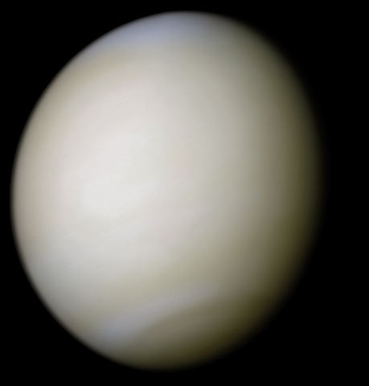
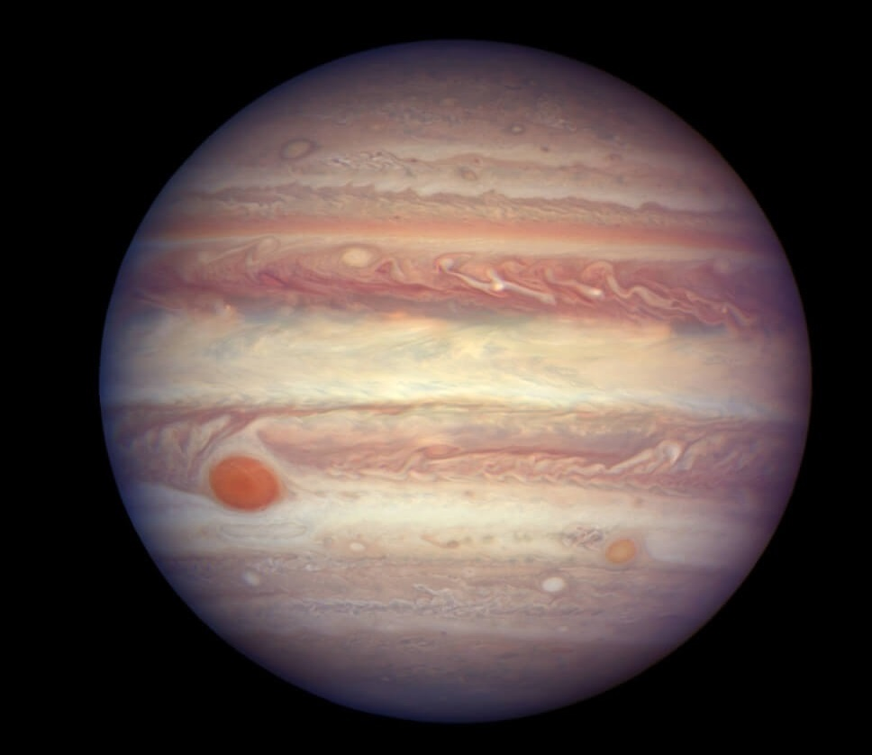
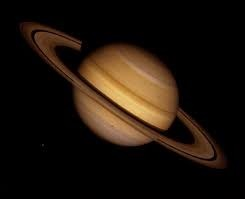
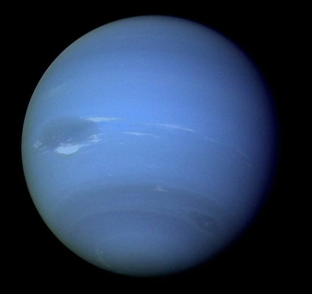

Merkury

Jest pierwszą, najmniejszą i najbliższą Słońcu planetą Układu Słonecznego.
Jest planetą skalistą o średnicy 4879 km.
Temperatura powierzchni waha się od −183 °C do 427 °C.
Odległość od Słońca wynosi 58 milionów km.
Posiada największa ilość kraterów w Układzie Słonecznym oraz strefy ciemne i jasne, które ze sobą sąsiadują.
Nie posiada księżyców jak i atmosfery, posiada za to cienką egzosferę.
Rok trwa 88 dni.
Wenus

Jest drugą biorąc pod uwagę jej odległość od Słońca planetą Układu Słonecznego.
Jest planetą skalistą o średnicy 12 tys.km. (Średnica Wenus jest zaledwie o 650 km mniejsza od Ziemi)
Temperatura powierzchni sięga 460 °C.
Odległość od Słońca wynosi 108 milionów km.
Większość powierzchni Wenus pokryta jest potężnymi potokami lawy.
Wenus nie posiada księżyców.
Rok trwa 225 dni.
Ziemia

Jest trzecią, licząc od Słońca, a piąta co do wielkości planetą Układu Słonecznego.
Jest jedynym znanym miejscem we Wszechświecie, w którym występuje życie.
Jest planetą skalistą o średnicy 12,742 tys.km.
Temperatura powierzchni waha się od -70 °C do 80 °C.
Odległość od Słońca wynosi 150 milionów km.
Ziemia posiada jeden księżyc.
Rok trwa 365 dni.
Mars

Jest czwartą według oddalenia od Słońca planetą Układu Słonecznego.
Jest planetą skalistą o średnicy 6,8 tys.km.
Temperatura powierzchni waha się od −87 °C do -5 °C.
Odległość od Słońca - 228 milionów km.
Powierzchnia Marsa jest naznaczona rozległymi pustyniami, kraterami i wulkanami.
Mars ma dwa księżyce.
Rok trwa 687 dni.
Jowisz

Jest piątą w kolejności oddalenia od Słońca i największa planeta Układu Słonecznego,
Nie posiada stałej powierzchni, jest planetą gazową o gęstości 1,326 g/cm³ i średnicy 143 tys.km.
Znajduje się w odległości 778 milionów km.od słońca.
Masa Jowisza jest o 318 razy większa od masy Ziemi, ciśnienie wynosi 70 kpa.
Wokół planety istnieją słabo widoczne pierścienie i potężna magnetosfera.
Jowisz ma 67 księżyców.
Rok trwa 12 lat.
Saturn

Jest szóstą planą Układu Słonecznego pod względem oddalenia od Słońca, drugą po Jowiszu pod względem masy i wielkości.
Charakterystyczną jego cechą są tzw. Pierścienie Saturna, składające się głównie z lodu i w mniejszej ilości z odłamków skalnych krążących wokół Saturna.
Jest planetą gazową o gęstości 687 g/cm³ i średnicy 120 tys.km.
Znajduje się w odległości 1,4 miliarda km. od Słońca.
Wokół Saturna krąży ponad 60 księżyców.
Rok trwa 30 lat.
Uran

Jest siódmą w kolejności od Słońca planeta Układu Słonecznego.
Jest także trzecią pod względem wielkości i czwartą pod względem masy planetą naszego systemu.
Atmosfera planety jest najzimniejsza w całym Układzie Słonecznym.
Jest planetą gazową o gęstości 1,318 g/cm³ i średnicy 51 tys.km.
Znajduje się w odległości 2,9 miliarda km.od słońca.
Uran ma 27 znanych księżyców.
Rok trwa 84 lata.
Neptun

Jest ósmą, najdalszą od Słońca planetą w Układzie Słonecznym.
Jest planetą gazową o gęstości 1,76 g/cm³ i średnicy 50 tys.km.
Znajduje się w odległości 4,5 miliarda km. od Słońca.
Neptun ma słaby i niekompletny system pierścieni.
Jego energia wewnętrzna potrafi wytworzyć najszybsze wiatry w Układzie Słonecznym.
Neptun ma 14 znanych księżyców.
Rok trwa 165 lat.